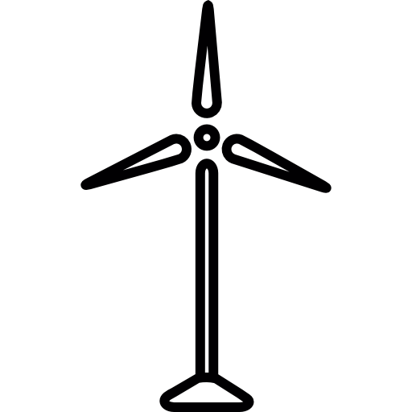

Energias
Solar

A energia fotovoltaica é hoje a fonte de energia limpa que mais cresce no mundo, e pode ser diretamente convertida em energia elétrica.
Eólica
A energia eólica diz respeito à transformação da energia do vento em energia útil, é uma forma de obter energia de forma renovável e limpa, uma vez que, não produz poluentes.
Maremotriz
A energia das marés, também conhecida como energia maremotriz, é obtida por meio do aproveitamento da energia proveniente do desnível das marés.